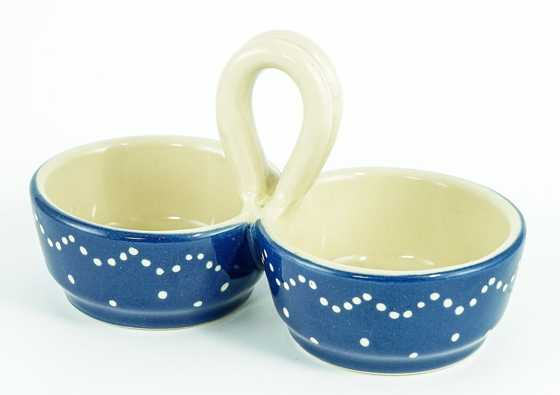

お店の名前「ringlu(リングル)」は、Instagramのプロフィールで「ring + mingle」と紹介されています。輪になること、混ざり合うこと。そんな言葉を思わせる、やわらかな響きのカフェです。
「小さなまちのカフェ」と名乗り、日立市若葉町の空きビルを改装した複合施設「まちの拠点 BUILD.」の101号室にあります。
※上記はInstagramの公開プロフィールで確認できた内容です。名前に込めた詳しい想いは確認できていないため、このページの色や輪のモチーフは制作側のイメージです。
ring + mingle = ringlu
人の輪がゆるやかに混ざり合う、まちの小さな居場所。

ringとmingleから生まれた名前
お店の名前「ringlu(リングル)」は、Instagramのプロフィールで「ring + mingle」と紹介されています。輪になること、混ざり合うこと。そんな言葉を思わせる、やわらかな響きのカフェです。
「小さなまちのカフェ」と名乗り、日立市若葉町の空きビルを改装した複合施設「まちの拠点 BUILD.」の101号室にあります。
営業時間・定休日・価格・メニュー詳細は準備中です

詳細は準備中

詳細は準備中

詳細は準備中

詳細は準備中
※写真はフリー素材のイメージで、店舗の実際の様子・商品ではありません。最新の情報はInstagramをご覧ください。




イメージ例(実在の声ではありません)
ビルの一室とは思えない、やさしい雰囲気。ゆっくり本を読みたくなる席でした。
焼き菓子と飲み物の組み合わせを選ぶ時間が楽しい。近所にあったらいいなと思います。
まちの小さな集まりの帰りに立ち寄りました。気取らず過ごせる場所です。